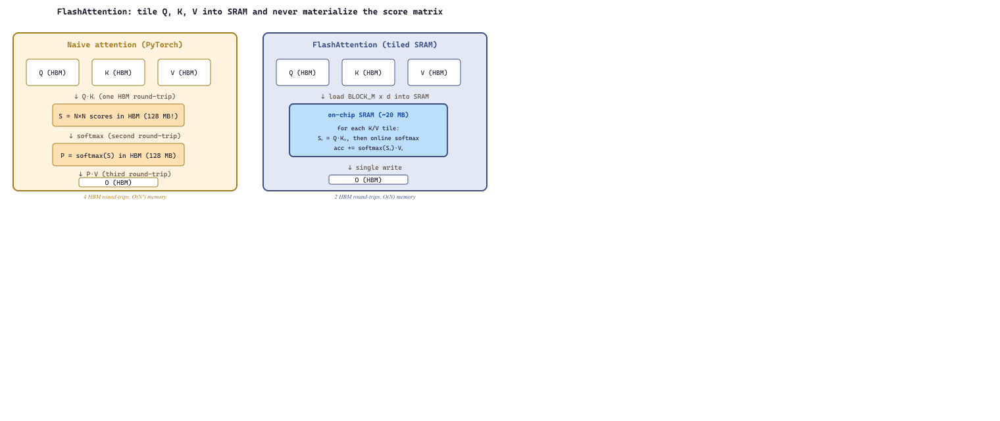

The fastest code is the code the GPU never has to wait for.
Quant, Kernel Obsessed AI Agent
The performance of LLM inference is ultimately determined by how efficiently we use GPU hardware. High-level frameworks like PyTorch compose operations from a library of pre-written CUDA kernels, but this composition introduces overhead: each kernel launch reads from and writes to global memory, even when the output of one operation feeds directly into the next. Custom kernels eliminate this overhead by fusing multiple operations into a single GPU program. FlashAttention, the single most impactful LLM optimization of recent years, is fundamentally a custom kernel that tiles the attention computation to fit in fast on-chip SRAM instead of slow off-chip HBM. This section teaches you how to write, profile, and reason about custom GPU kernels using Triton, OpenAI's Python-based kernel programming language.
Prerequisites
This section assumes familiarity with the transformer architecture from Section 3.3, the attention mechanism in particular. The quantization and memory optimization techniques from Section 9.1 and Section 9.3 provide important context for understanding why custom kernels are needed. Basic familiarity with GPU hardware concepts (threads, blocks, shared memory) is helpful but not required.
9.9.1 Why Custom Kernels Matter
A standard PyTorch attention implementation performs four separate GPU operations: matrix multiplication (Q @ K^T), scaling, softmax, and another matrix multiplication (scores @ V). Each operation launches a separate kernel, and each kernel reads its inputs from HBM (High Bandwidth Memory, the GPU's main memory) and writes its outputs back to HBM. For a sequence length of 8,192 and a hidden dimension of 4,096, the attention scores matrix alone is 8192 x 8192 x 2 bytes = 128 MB. This matrix is written to HBM by the first kernel and read back by the softmax kernel, even though it is a temporary intermediate that is never needed again.
On a cruise ship, passengers see the dining room and the deck; almost no one visits the engine room where the heat and the noise live. GPU kernels are the engine room of LLM inference: ugly C++ and PTX that pushes data through warps and shared memory while the Python layer above sips coffee on deck. A kernel that is even ten percent faster shows up as a measurable change in your inference bill.
The key insight is that modern GPUs are memory-bandwidth-bound for most LLM operations, not compute-bound. An NVIDIA A100 can perform 312 TFLOPS of FP16 computation but can only move data at 2 TB/s. The ratio of compute to memory bandwidth (the arithmetic intensity threshold) is about 156 FLOPs per byte. Any operation that performs fewer than 156 FLOPs for each byte it reads or writes is bottlenecked by memory, not compute. Most element-wise operations (activation functions, layer normalization, dropout) fall far below this threshold.
Custom kernels solve this by keeping intermediate results in SRAM (the GPU's fast on-chip memory, roughly 20 MB on an A100) and performing multiple operations before writing back to HBM. This technique is called kernel fusion, and it is the foundation of FlashAttention, fused layer normalization, and most other high-performance LLM kernels.
The roofline model provides a visual framework for understanding whether a kernel is compute-bound or memory-bound. Plot the arithmetic intensity (FLOPs per byte of memory traffic) on the x-axis and achieved throughput (TFLOPS) on the y-axis. The "roofline" is formed by two lines: a flat ceiling at the GPU's peak compute rate, and a sloped line representing the memory bandwidth limit. Operations below the intersection point are memory-bound; operations above it are compute-bound. For LLMs, most operations besides large matrix multiplications fall in the memory-bound region, which is why kernel fusion (reducing memory traffic) delivers larger speedups than optimizing arithmetic.
9.9.1.1 Arithmetic Intensity Analysis
Before writing a custom kernel, you should determine whether the operation is worth optimizing. The arithmetic intensity of an operation is defined as:
$$ \text{Arithmetic Intensity} = \frac{\text{FLOPs}}{\text{Bytes Transferred}} $$For an element-wise operation like GELU activation on a tensor of $n$ elements (FP16), the computation requires roughly $10n$ FLOPs while reading $2n$ bytes and writing $2n$ bytes, giving an arithmetic intensity of $10n / 4n = 2.5$ FLOPs/byte. This is far below the A100's threshold of 156, making it heavily memory-bound and an excellent candidate for fusion with adjacent operations.
For a matrix multiplication of shapes $(M, K) \times (K, N)$, the computation requires $2MKN$ FLOPs while transferring $2(MK + KN + MN)$ bytes, giving an arithmetic intensity that grows with matrix size. Large GEMM operations in LLMs are typically compute-bound and well-served by cuBLAS; the opportunity for custom kernels lies in the surrounding element-wise and reduction operations.
# Arithmetic intensity calculator for common LLM operations
# Use this to decide whether a custom kernel is worthwhile
import torch
def arithmetic_intensity(op_name, M=4096, N=4096, K=4096, dtype_bytes=2):
"""Calculate FLOPs/byte for common operations on an MxN matrix."""
if op_name == "gelu":
# Element-wise: ~10 FLOPs per element, read + write
flops = 10 * M * N
bytes_transferred = 2 * dtype_bytes * M * N # read + write
elif op_name == "layernorm":
# Two passes (mean, variance) + normalize: ~8 FLOPs per element
flops = 8 * M * N
bytes_transferred = 2 * dtype_bytes * M * N
elif op_name == "softmax":
# Max reduction + exp + sum reduction + divide: ~8 FLOPs per element
flops = 8 * M * N
bytes_transferred = 2 * dtype_bytes * M * N
elif op_name == "matmul":
# 2*M*K*N FLOPs, read A(M,K) + B(K,N) + write C(M,N)
flops = 2 * M * K * N
bytes_transferred = dtype_bytes * (M * K + K * N + M * N)
elif op_name == "fused_attention":
# Q@K^T + scale + softmax + @V, but intermediate stays in SRAM
# Only reads Q, K, V and writes output
flops = 2 * M * K * N + 8 * M * N + 2 * M * K * N
bytes_transferred = dtype_bytes * (3 * M * K + M * K) # Q,K,V in + O out
else:
raise ValueError(f"Unknown operation: {op_name}")
intensity = flops / bytes_transferred
a100_threshold = 156 # FLOPs/byte for A100 at FP16
bound = "COMPUTE" if intensity > a100_threshold else "MEMORY"
print(f"{op_name:>20}: {intensity:8.1f} FLOPs/byte [{bound}-bound]")
return intensity
# Compare operations at typical LLM dimensions
print(f"{'Operation':>20} {'Intensity':>8} Bottleneck")
print("-" * 50)
for op in ["gelu", "layernorm", "softmax", "matmul", "fused_attention"]:
arithmetic_intensity(op)# FlashAttention conceptual implementation in Triton (simplified)
# Production code: use flash_attn package or torch SDPA
import torch
import triton
import triton.language as tl
@triton.jit
def flash_attention_fwd_kernel(
Q_ptr, K_ptr, V_ptr, O_ptr,
stride_qm, stride_qd,
stride_kn, stride_kd,
stride_vn, stride_vd,
stride_om, stride_od,
seq_len, head_dim,
scale,
BLOCK_M: tl.constexpr, # tile size for queries
BLOCK_N: tl.constexpr, # tile size for keys/values
BLOCK_D: tl.constexpr, # head dimension (must cover full d)
):
# Each program handles one BLOCK_M-sized tile of queries
pid_m = tl.program_id(0)
start_m = pid_m * BLOCK_M
# Initialize accumulators in SRAM
m_offsets = start_m + tl.arange(0, BLOCK_M)
d_offsets = tl.arange(0, BLOCK_D)
# Running softmax statistics (online softmax trick)
m_i = tl.full([BLOCK_M], value=-float("inf"), dtype=tl.float32) # running max
l_i = tl.zeros([BLOCK_M], dtype=tl.float32) # running sum of exp
acc = tl.zeros([BLOCK_M, BLOCK_D], dtype=tl.float32) # output accumulator
# Load Q tile (stays in SRAM for all K/V tiles)
q_ptrs = Q_ptr + m_offsets[:, None] * stride_qm + d_offsets[None, :] * stride_qd
q_mask = m_offsets[:, None] < seq_len
q = tl.load(q_ptrs, mask=q_mask, other=0.0)
# Iterate over all K/V tiles
for start_n in range(0, seq_len, BLOCK_N):
n_offsets = start_n + tl.arange(0, BLOCK_N)
# Load K tile
k_ptrs = K_ptr + n_offsets[:, None] * stride_kn + d_offsets[None, :] * stride_kd
k_mask = n_offsets[:, None] < seq_len
k = tl.load(k_ptrs, mask=k_mask, other=0.0)
# Compute attention scores for this tile: [BLOCK_M, BLOCK_N]
scores = tl.dot(q, tl.trans(k)) * scale
# Online softmax update
m_new = tl.maximum(m_i, tl.max(scores, axis=1))
alpha = tl.exp(m_i - m_new)
p = tl.exp(scores - m_new[:, None])
# Rescale previous accumulator and add new contribution
l_i = l_i * alpha + tl.sum(p, axis=1)
acc = acc * alpha[:, None]
# Load V tile and accumulate
v_ptrs = V_ptr + n_offsets[:, None] * stride_vn + d_offsets[None, :] * stride_vd
v = tl.load(v_ptrs, mask=n_offsets[:, None] < seq_len, other=0.0)
acc += tl.dot(p.to(tl.float16), v)
m_i = m_new
# Final normalization
acc = acc / l_i[:, None]
# Write output tile to HBM
o_ptrs = O_ptr + m_offsets[:, None] * stride_om + d_offsets[None, :] * stride_od
o_mask = m_offsets[:, None] < seq_len
tl.store(o_ptrs, acc.to(tl.float16), mask=o_mask)
print("FlashAttention kernel defined (see flash_attn package for production use)")
9.9.2 Triton: Python-Based GPU Kernel Programming
Section 3.6 introduced Triton's block-level programming model and walked through a fused-softmax kernel. Here the motivation is narrower and sharper: at inference time, the operations that dominate the decode loop (the attention score-and-softmax sequence, RMSNorm, the rotary embedding, the sampling tail) are almost all memory-bound, so fusing them into a single Triton kernel removes round-trips to HBM that no amount of better batching can recover. That is exactly why serving stacks like vLLM and SGLang ship hand-tuned Triton kernels for their hottest paths. The rest of this section treats Triton from the serving engineer's seat, where the goal is a kernel that keeps the GPU busy between tokens rather than a teaching example.
The core abstraction in Triton is the block pointer. Instead of computing a single output element per thread, a Triton kernel computes an entire block of output elements. The programmer specifies the block size (e.g., BLOCK_SIZE=1024), and Triton's compiler maps this to an efficient thread configuration. The programmer's job is to describe the data flow at the block level; the compiler's job is to make it fast.
9.9.2.1 A First Triton Kernel: Vector Addition
This snippet writes a simple Triton kernel that performs element-wise vector addition on the GPU.
# Triton vector addition kernel
# The simplest possible Triton kernel, showing the block programming model
import torch
import triton
import triton.language as tl
@triton.jit
def vector_add_kernel(
x_ptr, # pointer to first input vector
y_ptr, # pointer to second input vector
output_ptr, # pointer to output vector
n_elements, # total number of elements
BLOCK_SIZE: tl.constexpr, # number of elements per block (compile-time)
):
# Each program instance handles one block of BLOCK_SIZE elements.
# pid tells us which block we are.
pid = tl.program_id(axis=0)
# Compute the range of indices this block handles
block_start = pid * BLOCK_SIZE
offsets = block_start + tl.arange(0, BLOCK_SIZE)
# Mask out-of-bounds accesses (last block may be partial)
mask = offsets < n_elements
# Load a block of data from each input (block-level load)
x = tl.load(x_ptr + offsets, mask=mask)
y = tl.load(y_ptr + offsets, mask=mask)
# Compute and store the result
output = x + y
tl.store(output_ptr + offsets, output, mask=mask)
def vector_add(x: torch.Tensor, y: torch.Tensor) -> torch.Tensor:
"""Launch the Triton vector addition kernel."""
output = torch.empty_like(x)
n_elements = output.numel()
BLOCK_SIZE = 1024
# Grid: number of blocks needed to cover all elements
grid = lambda meta: (triton.cdiv(n_elements, meta["BLOCK_SIZE"]),)
vector_add_kernel[grid](x, y, output, n_elements, BLOCK_SIZE=BLOCK_SIZE)
return output
# Test
x = torch.randn(100_000, device="cuda", dtype=torch.float16)
y = torch.randn(100_000, device="cuda", dtype=torch.float16)
result = vector_add(x, y)
assert torch.allclose(result, x + y, atol=1e-3)
print("Triton vector addition: correct!")program_id (which block am I?), block-level loads and stores, and out-of-bounds masking.9.9.2.2 Fused Softmax Kernel
Softmax is one of the most common operations in LLM inference, applied at every attention layer. A naive PyTorch implementation performs three separate passes over the data: compute the maximum (for numerical stability), compute exponentials, and normalize by the sum. Each pass reads and writes the entire tensor to HBM. A fused Triton kernel performs all three passes in a single kernel launch, keeping intermediate results in registers and SRAM.
# Fused softmax in Triton: three passes fused into one kernel launch
# Eliminates two round-trips to HBM compared to PyTorch's unfused version
import torch
import triton
import triton.language as tl
@triton.jit
def fused_softmax_kernel(
input_ptr, output_ptr,
n_cols,
input_row_stride,
output_row_stride,
BLOCK_SIZE: tl.constexpr,
):
# Each program handles one row of the input matrix
row_idx = tl.program_id(0)
row_start = row_idx * input_row_stride
# Load one row into registers (fast on-chip memory)
col_offsets = tl.arange(0, BLOCK_SIZE)
mask = col_offsets < n_cols
row = tl.load(input_ptr + row_start + col_offsets, mask=mask, other=-float("inf"))
# Pass 1: find maximum for numerical stability (in registers)
row_max = tl.max(row, axis=0)
# Pass 2: compute exponentials (still in registers)
numerator = tl.exp(row - row_max)
# Pass 3: normalize (still in registers)
denominator = tl.sum(numerator, axis=0)
softmax_output = numerator / denominator
# Single write to HBM (vs. 3 writes in unfused version)
out_start = row_idx * output_row_stride
tl.store(output_ptr + out_start + col_offsets, softmax_output, mask=mask)
def fused_softmax(x: torch.Tensor) -> torch.Tensor:
"""Fused softmax along the last dimension."""
n_rows, n_cols = x.shape
BLOCK_SIZE = triton.next_power_of_2(n_cols)
output = torch.empty_like(x)
fused_softmax_kernel[(n_rows,)](
x, output,
n_cols,
x.stride(0), output.stride(0),
BLOCK_SIZE=BLOCK_SIZE,
)
return output
# Benchmark against PyTorch
x = torch.randn(4096, 4096, device="cuda", dtype=torch.float16)
torch_result = torch.softmax(x, dim=-1)
triton_result = fused_softmax(x)
assert torch.allclose(triton_result, torch_result, atol=1e-2)
print("Fused softmax: correct! (3 memory passes reduced to 1)")9.9.3 FlashAttention: Tiled Attention in SRAM
FlashAttention (Dao et al., 2022) is the most impactful custom kernel in the LLM ecosystem. The core insight is that the standard attention computation, $\text{softmax}(QK^T / \sqrt{d_k})V$, creates an $N \times N$ attention matrix (where $N$ is the sequence length) that must be materialized in HBM. For $N = 8192$ and FP16, this matrix is 128 MB per attention head. FlashAttention avoids materializing this matrix entirely by tiling the computation into blocks that fit in SRAM.
Algorithm: Numerically stable softmax in a single pass over blocks
Input: blocks {s_1, s_2, ..., s_B}, each a vector of attention scores in a row
Output: softmax-weighted values, plus the normalizing constant l
// State carried between blocks: m = running max, l = running denominator
m := -infinity
l := 0
o := 0 // running weighted sum of values (same dim as V row)
For each block (s_j, v_j) in stream order:
m_new := max(m, max(s_j)) // updated max for this row
alpha := exp(m - m_new) // rescale factor for old state
l := alpha * l + sum( exp(s_j - m_new) ) // updated denominator
o := alpha * o + exp(s_j - m_new) @ v_j // updated weighted-sum
m := m_new
// After all blocks processed
Return o / l, m, l // final attention output
Why it is mathematically equivalent to the offline softmax.
With S = concat(s_1, ..., s_B), v = concat(v_1, ..., v_B), and m* = max(S):
p = exp(S - m*) / sum(exp(S - m*))
softmax(S) @ v = sum_i p_i v_i.
The recurrence maintains the invariant
l_j = sum_{k <= j} exp(s_k - m_j),
o_j = sum_{k <= j} exp(s_k - m_j) v_k,
so after the last block, o_B / l_B = softmax(S) v.
Properties used by FlashAttention:
- Numerical stability: each exp argument is <= 0, never overflows
- Streaming: any block ordering is correct (commutative)
- O(block_size) working state, so it fits in SRAM (~100 KB)Source: Milakov and Gimelshein, "Online Normalizer Calculation for Softmax" (NVIDIA, arXiv:1805.02867, 2018). This recurrence is the algebraic core of FlashAttention (Dao et al., 2022, arXiv:2205.14135): the softmax-then-multiply pipeline of standard attention is rewritten as one fused streaming pass that maintains (m, l, o) per query row across all K/V blocks. FlashAttention-2 (Dao 2023, arXiv:2307.08691) reuses this exact recurrence and only changes the work partitioning across GPU warps for better parallelism.
The algorithm processes the attention computation in tiles. For each tile of Q (a block of query rows), it iterates over all tiles of K and V, accumulating partial results in SRAM. The running softmax normalization is maintained using the "online softmax" trick: as each new block of K is processed, the running maximum and sum statistics are updated, and previous partial results are rescaled. This ensures numerical correctness without ever materializing the full attention matrix.
FlashAttention's memory complexity is $O(N)$ instead of $O(N^2)$, enabling much longer sequence lengths. FlashAttention-2 further improved throughput by 2x through better work partitioning across GPU warps, and FlashAttention-3 (for Hopper GPUs) exploits hardware-level asynchronous operations for another 1.5x improvement.
Consider a transformer with 32 attention heads, sequence length 8,192, and head dimension 128. Standard attention materializes 32 attention matrices of size 8192 x 8192 in FP16, consuming 32 x 128 MB = 4 GB of HBM just for intermediate storage. FlashAttention reduces this to roughly 32 x (2 x BLOCK_SIZE x 128 x 2 bytes), which at BLOCK_SIZE=256 is about 4 MB. This 1000x reduction in intermediate memory is what enables 128K+ context lengths on hardware that could previously only handle 2K-4K tokens with standard attention.
# --- FlashAttention forward pass in Triton (simplified, single-head) ---
# Key ideas:
# 1. Q tile of shape (BLOCK_M, head_dim) stays in fast SRAM
# 2. We stream K, V tiles of shape (BLOCK_N, head_dim) in turn
# 3. Online softmax: maintain running max m_i and denominator l_i
# so we never materialize the full N x N attention matrix
import torch
import triton
import triton.language as tl
@triton.jit
def flash_attn_fwd(
Q_ptr, K_ptr, V_ptr, O_ptr,
stride_qm, stride_qk, # Q strides (M, K)
stride_kn, stride_kk, # K strides (N, K)
stride_vn, stride_vk, # V strides (N, K)
stride_om, stride_ok, # O strides (M, K)
M, N, # sequence lengths
softmax_scale, # 1 / sqrt(head_dim)
BLOCK_M: tl.constexpr,
BLOCK_N: tl.constexpr,
HEAD_DIM: tl.constexpr,
):
# Each program handles ONE Q tile of BLOCK_M rows
pid_m = tl.program_id(0)
# Load this Q tile into SRAM (stays here for the entire kernel)
offs_m = pid_m * BLOCK_M + tl.arange(0, BLOCK_M)
offs_k = tl.arange(0, HEAD_DIM)
q_ptrs = Q_ptr + offs_m[:, None] * stride_qm + offs_k[None, :] * stride_qk
q = tl.load(q_ptrs, mask=offs_m[:, None] < M, other=0.0)
q = q * softmax_scale
# Online-softmax accumulators
m_i = tl.full((BLOCK_M,), float("-inf"), dtype=tl.float32) # running max
l_i = tl.zeros((BLOCK_M,), dtype=tl.float32) # running denom
acc = tl.zeros((BLOCK_M, HEAD_DIM), dtype=tl.float32) # output accum
# Stream over K, V tiles
for start_n in range(0, N, BLOCK_N):
offs_n = start_n + tl.arange(0, BLOCK_N)
# Load K, V tile
k_ptrs = K_ptr + offs_n[:, None] * stride_kn + offs_k[None, :] * stride_kk
v_ptrs = V_ptr + offs_n[:, None] * stride_vn + offs_k[None, :] * stride_vk
k = tl.load(k_ptrs, mask=offs_n[:, None] < N, other=0.0)
v = tl.load(v_ptrs, mask=offs_n[:, None] < N, other=0.0)
# Compute QK^T for this tile: shape (BLOCK_M, BLOCK_N)
s = tl.dot(q, tl.trans(k))
# Online softmax update
m_new = tl.maximum(m_i, tl.max(s, axis=1))
alpha = tl.exp(m_i - m_new) # rescale prev
p = tl.exp(s - m_new[:, None]) # current tile softmax (unnormalized)
l_new = alpha * l_i + tl.sum(p, axis=1)
# Rescale prior accumulator and add this tile's contribution
acc = acc * alpha[:, None] + tl.dot(p.to(v.dtype), v)
m_i, l_i = m_new, l_new
# Final normalization
o = acc / l_i[:, None]
# Write output
o_ptrs = O_ptr + offs_m[:, None] * stride_om + offs_k[None, :] * stride_ok
tl.store(o_ptrs, o.to(O_ptr.dtype.element_ty), mask=offs_m[:, None] < M)
def flash_attention(q: torch.Tensor, k: torch.Tensor, v: torch.Tensor,
block_m: int = 64, block_n: int = 64) -> torch.Tensor:
"""Wrapper: q/k/v are (M, head_dim), (N, head_dim), (N, head_dim) on CUDA."""
M, head_dim = q.shape
N = k.shape[0]
o = torch.empty_like(q)
grid = (triton.cdiv(M, block_m),)
flash_attn_fwd[grid](
q, k, v, o,
q.stride(0), q.stride(1),
k.stride(0), k.stride(1),
v.stride(0), v.stride(1),
o.stride(0), o.stride(1),
M, N,
softmax_scale=1.0 / (head_dim ** 0.5),
BLOCK_M=block_m, BLOCK_N=block_n, HEAD_DIM=head_dim,
)
return o
flash-attn package or torch.nn.functional.scaled_dot_product_attention.The following worked example puts concrete numbers on the FLOPs, HBM traffic, and arithmetic intensity that explain why FlashAttention so dramatically outperforms a naive PyTorch implementation, even though both perform the same arithmetic.
Consider one attention head with sequence length $N = 8192$, head dimension $d = 128$, FP16 storage (2 bytes), tile sizes $B_r = B_c = 64$. Both kernels do the same $4 N^2 d \approx 34.4$ GFLOPs of arithmetic; only the memory traffic differs.
Standard attention HBM traffic. Read Q, K, V (each $N d$ FP16 = 2 MB, total 6 MB), write the attention scores $S$ and probabilities $P$ (each $N^2$ FP16 = 128 MB, total 256 MB), read $P$ and V back for the $PV$ matmul (128 MB + 2 MB), write output O (2 MB). Total HBM traffic $\approx 394$ MB.
FlashAttention HBM traffic. Each Q tile is loaded once (total $N d \cdot 2 = 2$ MB). For every Q tile the full K and V are streamed once, so K and V are read $N / B_r = 128$ times each: $128 \cdot 2 \text{ MB} \cdot 2 = 512$ MB. Output O is written once (2 MB). Total HBM traffic $\approx 516$ MB. The S and P matrices are never written to HBM; they live in SRAM tiles of $B_r \cdot B_c \cdot 4$ bytes (online softmax keeps FP32 accumulators) $\approx 16$ KB per program.
Wait, FlashAttention reads more bytes? Yes, slightly more, but the bytes that matter are the materialized $N \times N$ matrices that the standard kernel allocates inside HBM. Standard attention spends a 128 MB write followed by a 128 MB read on the probabilities; FlashAttention spends 0 bytes there. On an A100 with 1.55 TB/s HBM bandwidth and 312 TFLOPS FP16, the standard kernel becomes memory-bound on the 256 MB intermediate writes, while FlashAttention's reads stream in a regular pattern that overlaps with the matmul. The measured A100 speedup is roughly 2 to 4x at $N = 8192$ and grows to 7x at $N = 16384$, exactly because the standard kernel's intermediate memory grows as $O(N^2)$ while FlashAttention's grows as $O(N)$.
9.9.4 JIT Compilation: torch.compile and XLA
Not every optimization requires hand-written kernels. torch.compile (introduced in PyTorch 2.0) uses the TorchInductor backend to automatically fuse operations and generate optimized Triton kernels. For many workloads, simply wrapping your model in torch.compile captures 50% to 80% of the speedup that a hand-written kernel would provide, with zero additional code.
XLA (Accelerated Linear Algebra), the compiler backend for JAX and TensorFlow, takes a different approach: it compiles entire computation graphs into optimized code for the target hardware. XLA performs operator fusion, layout optimization, and memory planning at the graph level, often producing code competitive with hand-written kernels for standard operations.
The decision tree for optimization is: (1) try torch.compile first; (2) if that is insufficient, profile to identify the bottleneck; (3) write a custom Triton kernel only for the specific bottleneck operation. Hand-written kernels should be a last resort, not a first instinct.
# torch.compile: automatic kernel fusion without writing custom kernels
import torch
import torch.nn as nn
import time
class TransformerBlock(nn.Module):
"""A simplified transformer block for benchmarking."""
def __init__(self, d_model=1024, n_heads=16):
super().__init__()
self.attn = nn.MultiheadAttention(d_model, n_heads, batch_first=True)
self.norm1 = nn.LayerNorm(d_model)
self.norm2 = nn.LayerNorm(d_model)
self.ffn = nn.Sequential(
nn.Linear(d_model, 4 * d_model),
nn.GELU(),
nn.Linear(4 * d_model, d_model),
)
def forward(self, x):
# Pre-norm architecture
h = self.norm1(x)
h, _ = self.attn(h, h, h)
x = x + h
x = x + self.ffn(self.norm2(x))
return x
device = torch.device("cuda")
model = TransformerBlock().to(device).half()
x = torch.randn(8, 512, 1024, device=device, dtype=torch.float16)
# Eager mode baseline
with torch.no_grad():
for _ in range(10): # warmup
_ = model(x)
torch.cuda.synchronize()
t0 = time.perf_counter()
for _ in range(100):
_ = model(x)
torch.cuda.synchronize()
eager_time = (time.perf_counter() - t0) / 100
# Compiled mode: torch.compile auto-fuses operations
compiled_model = torch.compile(model, mode="reduce-overhead")
with torch.no_grad():
for _ in range(10): # warmup (includes compilation)
_ = compiled_model(x)
torch.cuda.synchronize()
t0 = time.perf_counter()
for _ in range(100):
_ = compiled_model(x)
torch.cuda.synchronize()
compiled_time = (time.perf_counter() - t0) / 100
speedup = eager_time / compiled_time
print(f"Eager: {eager_time*1000:.2f} ms")
print(f"Compiled: {compiled_time*1000:.2f} ms")
print(f"Speedup: {speedup:.2f}x")torch.compile automatically fuses operations in a transformer block. The reduce-overhead mode minimizes kernel launch latency using CUDA graphs. Typical speedups range from 1.3x to 2x depending on the model architecture.Write a custom Triton kernel when all three conditions are met: (1) profiling shows a specific operation consuming a disproportionate fraction of wall-clock time; (2) the operation is memory-bound (low arithmetic intensity); (3) torch.compile does not fuse the operation effectively (check by inspecting the generated code with TORCH_COMPILE_DEBUG=1). In practice, custom kernels are most valuable for attention variants (sparse attention, sliding window), custom activation functions, and fused normalization + residual operations.
9.9.5 Performance Profiling
Effective GPU optimization requires precise measurement. The PyTorch profiler, NVIDIA Nsight Systems, and NVIDIA Nsight Compute provide complementary views: the PyTorch profiler shows operation-level timing within the Python framework; Nsight Systems shows the full timeline of CPU and GPU activity including kernel launches and memory transfers; Nsight Compute provides detailed per-kernel metrics including occupancy, memory throughput, and compute utilization.
The most common profiling mistake is measuring wall-clock time without GPU synchronization. GPU operations are asynchronous: when Python calls torch.matmul(A, B), the function returns immediately while the GPU works in the background. Without an explicit torch.cuda.synchronize() before timing measurements, you measure only the CPU-side overhead of launching the kernel, not the actual GPU execution time.
# PyTorch profiler: identifying kernel-level bottlenecks
import torch
from torch.profiler import profile, ProfilerActivity, schedule
model = torch.nn.TransformerEncoderLayer(
d_model=1024, nhead=16, batch_first=True
).cuda().half()
x = torch.randn(8, 512, 1024, device="cuda", dtype=torch.float16)
# Profile with GPU activity tracking
with profile(
activities=[ProfilerActivity.CPU, ProfilerActivity.CUDA],
record_shapes=True,
profile_memory=True,
with_stack=True,
) as prof:
with torch.no_grad():
for _ in range(5):
_ = model(x)
torch.cuda.synchronize()
# Print the top 20 operations by GPU time
print(prof.key_averages().table(
sort_by="cuda_time_total",
row_limit=20,
top_level_events_only=False,
))
# Export Chrome trace for visual inspection
# Open chrome://tracing and load this file
prof.export_chrome_trace("transformer_trace.json")
print("Trace exported to transformer_trace.json")
print("Open chrome://tracing in Chrome to visualize")9.9.6 Putting It Together: Optimization Workflow
A systematic approach to LLM kernel optimization follows these steps:
- Profile first. Use the PyTorch profiler to identify which operations consume the most GPU time. Focus on operations that appear repeatedly (attention, normalization, activation functions).
- Classify the bottleneck. Use arithmetic intensity analysis (Code Fragment 9.9.2b) to determine whether each bottleneck is memory-bound or compute-bound. Memory-bound operations benefit from fusion; compute-bound operations benefit from algorithmic improvements or hardware upgrades.
- Try torch.compile. Apply
torch.compileand re-profile. If the bottleneck is resolved, stop here. Check the generated Triton code to understand what the compiler did. - Write a targeted kernel. If torch.compile does not adequately fuse the bottleneck operation, write a custom Triton kernel for that specific operation. Start with correctness (compare against PyTorch reference), then optimize for performance.
- Validate at scale. Test the optimized kernel at production-scale batch sizes and sequence lengths. Performance characteristics can change significantly between small test inputs and real workloads.
- Arithmetic intensity. Using Code Fragment 9.9.2c, calculate the arithmetic intensity of the full transformer forward pass (attention + FFN + normalization) for sequence lengths of 512, 2048, and 8192. At what sequence length does the attention computation transition from memory-bound to compute-bound?
- Fused GELU kernel. Write a Triton kernel that fuses the linear projection and GELU activation in the FFN layer (compute
GELU(xW + b)in a single kernel). Compare its performance against separatetorch.nn.Linear+torch.nn.GELUcalls using the PyTorch profiler. - torch.compile inspection. Apply
torch.compileto a full transformer encoder layer and setTORCH_COMPILE_DEBUG=1. Examine the generated Triton code in the debug output. Which operations did the compiler fuse, and which did it leave unfused? Can you explain why? - Profiling practice. Using Code Fragment 9.9.7a, profile an inference pass through a Hugging Face model (e.g.,
facebook/opt-1.3b). Identify the top 5 GPU operations by time and classify each as memory-bound or compute-bound. Which operations would benefit most from custom kernels?
The boundary between hand-written kernels and compiler-generated code is blurring. Projects like FlexAttention (PyTorch's composable attention API) allow users to define custom attention patterns (causal, sliding window, block-sparse) as simple Python functions, which are then compiled into efficient fused kernels. Meanwhile, emerging ML compilers like Mojo and the Pallas frontend for XLA aim to give programmers CUDA-level control with Python-level ergonomics. The CS336 course at Stanford (Spring 2025) provides an excellent deep dive into building LLM systems from scratch, including writing attention kernels in Triton as a core assignment.
Objective
Load a language model at full FP32 precision, quantize it to INT8 using bitsandbytes, and measure the impact on memory usage, inference latency, and output quality. Then compare with vLLM serving to see how production inference engines handle quantization automatically.
What You'll Practice
- Loading models in different precisions (FP32, FP16, INT8)
- Using bitsandbytes for post-training quantization
- Benchmarking GPU memory and inference latency
- Comparing output quality across precision levels
Setup
This lab requires a CUDA-capable GPU. A GPU with at least 8 GB of VRAM is recommended.
pip install transformers torch accelerate bitsandbytesSteps
Step 1: Load the model at FP16 and measure baseline
Load a small model and record its memory footprint and generation speed as a baseline.
import torch
import time
from transformers import AutoModelForCausalLM, AutoTokenizer
model_name = "HuggingFaceTB/SmolLM2-360M-Instruct"
tokenizer = AutoTokenizer.from_pretrained(model_name)
# Baseline: FP16
torch.cuda.reset_peak_memory_stats()
model_fp16 = AutoModelForCausalLM.from_pretrained(
model_name, torch_dtype=torch.float16, device_map="auto"
)
mem_fp16 = torch.cuda.max_memory_allocated() / 1024**2
prompt = "Explain the difference between compiled and interpreted languages."
inputs = tokenizer(prompt, return_tensors="pt").to(model_fp16.device)
# Warm-up run
with torch.no_grad():
model_fp16.generate(**inputs, max_new_tokens=100)
# Timed run
start = time.perf_counter()
with torch.no_grad():
out_fp16 = model_fp16.generate(**inputs, max_new_tokens=100)
latency_fp16 = time.perf_counter() - start
text_fp16 = tokenizer.decode(out_fp16[0], skip_special_tokens=True)
print(f"FP16 Memory: {mem_fp16:.0f} MB")
print(f"FP16 Latency: {latency_fp16:.3f}s")
print(f"FP16 Output: {text_fp16[:300]}")Hint
Always include a warm-up generation before timing. The first call triggers CUDA kernel compilation and memory allocation, which would inflate the latency measurement.
Step 2: Quantize to INT8 with bitsandbytes
Reload the model with 8-bit quantization and repeat the measurements.
from transformers import AutoModelForCausalLM
import time
import torch
from transformers import BitsAndBytesConfig
del model_fp16
torch.cuda.empty_cache()
torch.cuda.reset_peak_memory_stats()
# INT8 quantization
bnb_config = BitsAndBytesConfig(load_in_8bit=True)
model_int8 = AutoModelForCausalLM.from_pretrained(
model_name, quantization_config=bnb_config, device_map="auto"
)
mem_int8 = torch.cuda.max_memory_allocated() / 1024**2
inputs = tokenizer(prompt, return_tensors="pt").to(model_int8.device)
# Warm-up and timed run
with torch.no_grad():
model_int8.generate(**inputs, max_new_tokens=100)
start = time.perf_counter()
with torch.no_grad():
out_int8 = model_int8.generate(**inputs, max_new_tokens=100)
latency_int8 = time.perf_counter() - start
text_int8 = tokenizer.decode(out_int8[0], skip_special_tokens=True)
print(f"\nINT8 Memory: {mem_int8:.0f} MB")
print(f"INT8 Latency: {latency_int8:.3f}s")
print(f"INT8 Output: {text_int8[:300]}")
Hint
INT8 quantization typically reduces memory by roughly 50% compared to FP16. Latency may not improve on all hardware because the INT8 kernels incur dequantization overhead during matrix multiplications.
Step 3: Compare results and discuss trade-offs
Summarize the memory, latency, and quality differences in a table.
import pandas as pd
results = pd.DataFrame([
{"Precision": "FP16", "Memory (MB)": f"{mem_fp16:.0f}",
"Latency (s)": f"{latency_fp16:.3f}",
"Tokens": len(out_fp16[0])},
{"Precision": "INT8", "Memory (MB)": f"{mem_int8:.0f}",
"Latency (s)": f"{latency_int8:.3f}",
"Tokens": len(out_int8[0])},
])
print("\n=== Quantization Comparison ===")
print(results.to_string(index=False))
savings = (1 - mem_int8 / mem_fp16) * 100
print(f"\nMemory savings: {savings:.1f}%")
print(f"\nFP16 snippet: {text_fp16[len(prompt):len(prompt)+200]}")
print(f"INT8 snippet: {text_int8[len(prompt):len(prompt)+200]}")Hint
For small models, INT8 may show minimal latency improvement because the compute is already fast. The real benefit of quantization shows with larger models (7B+) where memory becomes the bottleneck, enabling models to fit on fewer or smaller GPUs.
Expected Output
- INT8 memory usage approximately 40-50% lower than FP16
- Latency similar or slightly higher for INT8 on small models
- Output quality nearly identical between FP16 and INT8 for this model size
Stretch Goals
- Try 4-bit quantization (
load_in_4bit=Truewith NF4) and add it to the comparison table - Run the same experiment on a 1B+ model to see larger memory savings
- Serve the quantized model with vLLM (
vllm serve model_name --quantization bitsandbytes) and benchmark throughput with concurrent requests
- Memory bandwidth, not compute, is the bottleneck. LLM inference is memory-bound during autoregressive decoding; custom kernels that minimize HBM reads deliver the largest speedups.
- FlashAttention trades compute for memory access. By tiling attention computation and keeping intermediate results in SRAM, FlashAttention achieves 2 to 4x speedups with no approximation.
- Triton makes GPU kernel development accessible. Writing fused kernels in Triton (Python-like syntax) is far simpler than raw CUDA while still achieving near-peak performance for common patterns.
- torch.compile automates fusion. For many workloads,
torch.compilecan automatically fuse operations and generate efficient GPU code without manual kernel writing. - Profile before optimizing. Tools like
torch.profilerand Nsight Systems reveal which operations are actually bottlenecked, preventing wasted effort on already-fast kernels.
1. A standard softmax attention kernel makes three passes over the attention matrix in HBM. Explain how FlashAttention reduces this to a single pass and why that yields a large speedup despite doing the same number of FLOPs.
Show Answer
2. You write a Triton kernel that fuses LayerNorm, Linear, and GELU into one kernel. What specific overhead does this fusion eliminate compared to running three separate CUDA kernels?
Show Answer
3. After running torch.compile(model), the first forward pass takes 30 seconds but subsequent passes take 4 ms. Explain what happens during that first call and when you would use fullgraph=True versus the default mode.
Show Answer
torch.compile dynamically captures the model's execution into an FX graph, lowers it through TorchInductor to a fused Triton/CUDA kernel set, and JIT-compiles to a binary. The cost is one-time per shape and dtype. After warmup, subsequent calls execute the optimized kernels directly. fullgraph=True forces the model to be a single captured graph and fails if there is any data-dependent control flow that torch.compile cannot trace. Use it when (a) you have eliminated data-dependent branches, (b) you want to AOT-export the graph for deployment, or (c) you need a guarantee of no Python-roundtrip during inference. Default mode (graph breaks allowed) is more permissive but slightly slower because it has to bounce back to Python at each break.What's Next?
With inference optimization covered, from quantization to custom GPU kernels, we move to understanding what happens inside these models. In Chapter 11: Interpretability and Mechanistic Understanding, we explore techniques for looking inside the black box: attention visualization, probing classifiers, logit lens, and mechanistic interpretability methods that reveal how LLMs actually process language.